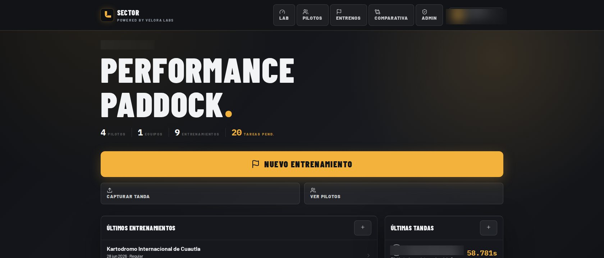

Rentamos Sector, nuestra plataforma de análisis de telemetría, y automatizamos la operación de contenido: datos de pista para entrenar mejor, redes sociales sin trabajo repetitivo.

Para Edel Racing Team conectamos dos productos propios a su operación: Sector — nuestra plataforma de análisis de telemetría y gestión de rendimiento, que seguimos desarrollando como producto y que rentamos a su equipo para pilotos y academia — y Velkin Content Hub, nuestro sistema de programación y publicación, que arma el calendario y publica en redes desde archivos preparados por el equipo.
La intención es la misma en ambos frentes: que el equipo dedique menos tiempo a tareas repetitivas y más tiempo a pista, coaching, contenido y crecimiento.
"El sistema debe quitar carga operativa y mejorar la siguiente decisión."Sector · Rentado por Edel Racing Team
El home del sistema prioriza lo que importa en pista: nuevo entrenamiento, captura de tanda, pilotos activos, tareas pendientes, últimos tiempos y sesiones recientes. La interfaz está pensada para usarse rápido, antes o después de entrar al kart.
Cada tanda acepta CSV de RaceBox Mini S (GPS, velocidad, fuerzas G) o archivos XRK/XRZ de AiM MyChron 5 (RPM, ángulo de volante, acelerómetro y giroscopio) — con un parser propio que detecta y descarta vueltas fantasma del firmware AiM. Ambas fuentes se resamplean a 25 Hz, se cruzan con el mapa GPS de la pista (overlay KML del trazado oficial) y alimentan un análisis automático por curva: G lateral, velocidad mínima y ángulo de volante por zona.
Cada análisis se genera en 16 secciones técnicas, filtradas por rol: el piloto ve técnica de conducción y referencias de frenada; el mecánico ve setup, PSI y geometría; dirección ve resumen ejecutivo y tendencias de campeonato. La IA también propone hipótesis de ajuste de chassis — pendiente → validada o rechazada — que se pasan como contexto comprimido a la siguiente sesión en esa misma pista.
Sector no se construyó pensando en un solo cliente: cada equipo administra sus propios pilotos, staff y datos de forma aislada. Cinco roles controlan qué se ve y qué se edita.
Acceso total: todos los equipos, comparativa y panel de administración.
Crea y edita sesiones, ve la comparativa solo de su propio equipo.
Crea tandas, sube telemetría y genera análisis IA.
Ve setups y datos de los pilotos que tiene asignados.
Ve su propio perfil, historial y tareas pendientes.
Por entrenamiento: mejor vuelta, gap al líder, promedio limpio, consistencia y mejor sector de cada piloto en la sesión. Por pista: ranking histórico de la mejor vuelta jamás registrada, con fecha y número de sesiones rodadas. Visible solo para dirección y coaches — cada director ve únicamente a los pilotos de su equipo.
Además de Sector, Edel Racing Team cuenta con Velkin Content Hub para reducir la operación manual de contenido. El equipo sube imágenes a Google Drive; Content Hub arma el calendario, genera el caption con IA, lo pasa por Cloudinary como proxy de entrega y publica en Instagram y Facebook.
Cinco roles y equipos sin visibilidad cruzada — el mismo producto opera para varios clientes a la vez.
GPS y fuerzas G de RaceBox, más RPM y volante de MyChron — con detección automática de vueltas fantasma.
Piloto, coach, mecánico y dirección reciben exactamente la información que les toca decidir.
Cada ajuste propuesto por la IA se valida o rechaza, y ese historial informa la siguiente sesión.
Ranking en vivo del día y ranking histórico de mejor vuelta por pista, con gap al líder y consistencia.
Drive, Velkin Content Hub, Cloudinary y Meta conectados para publicar contenido sin repetir operación manual.
Cuéntanos qué decisiones se siguen tomando a mano. El diagnóstico es gratuito y sin compromiso.